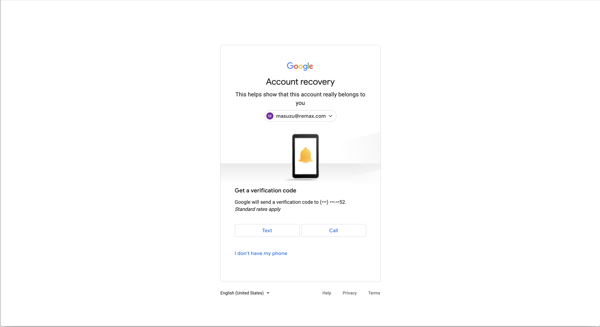
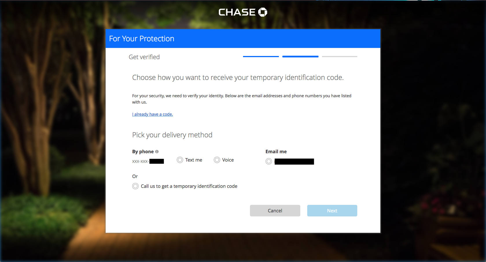
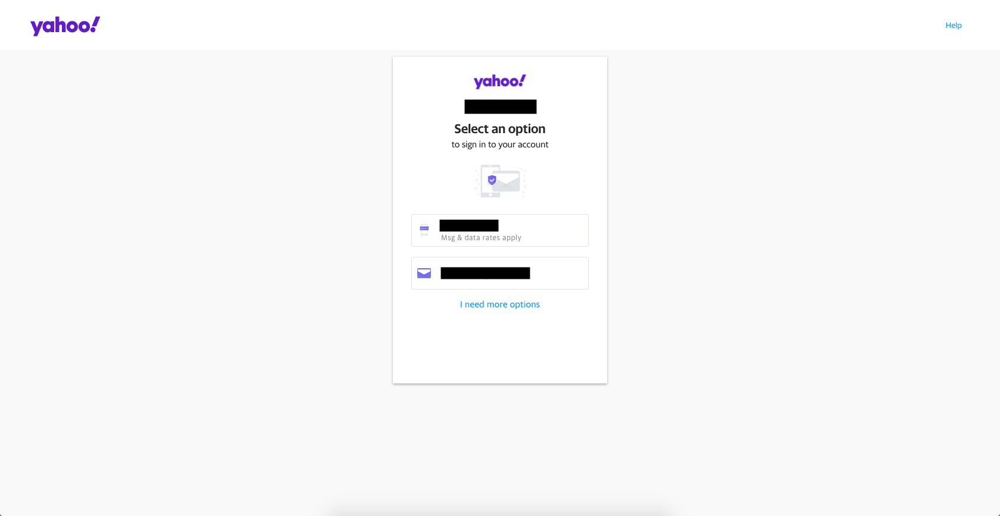
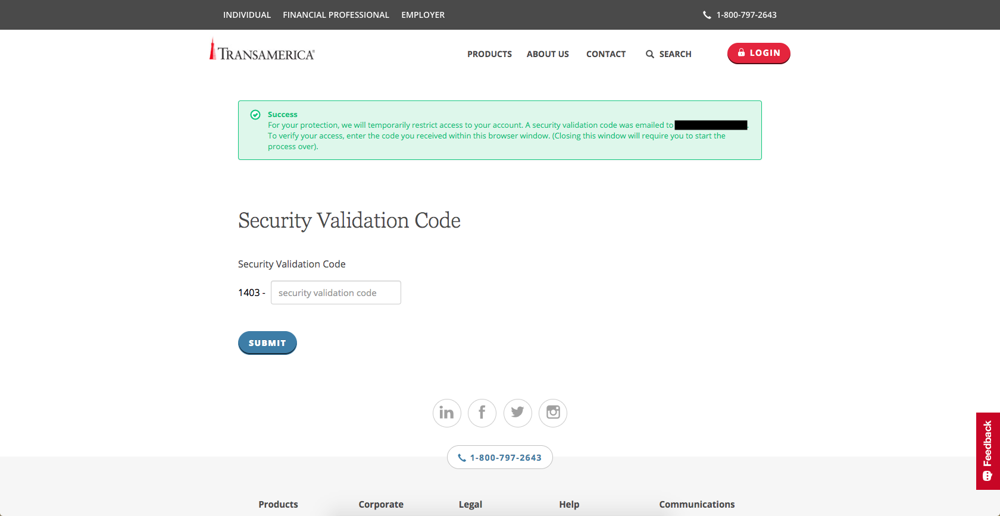
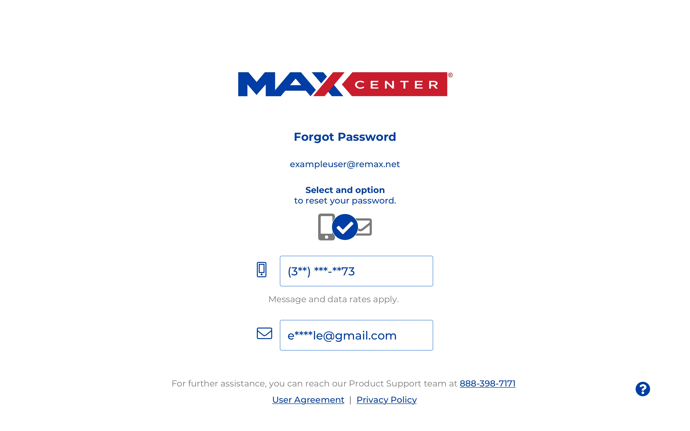
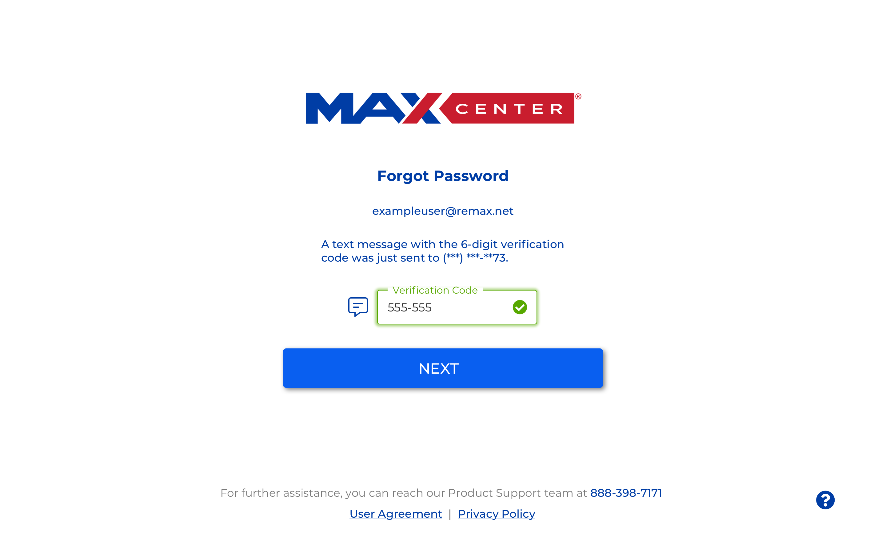
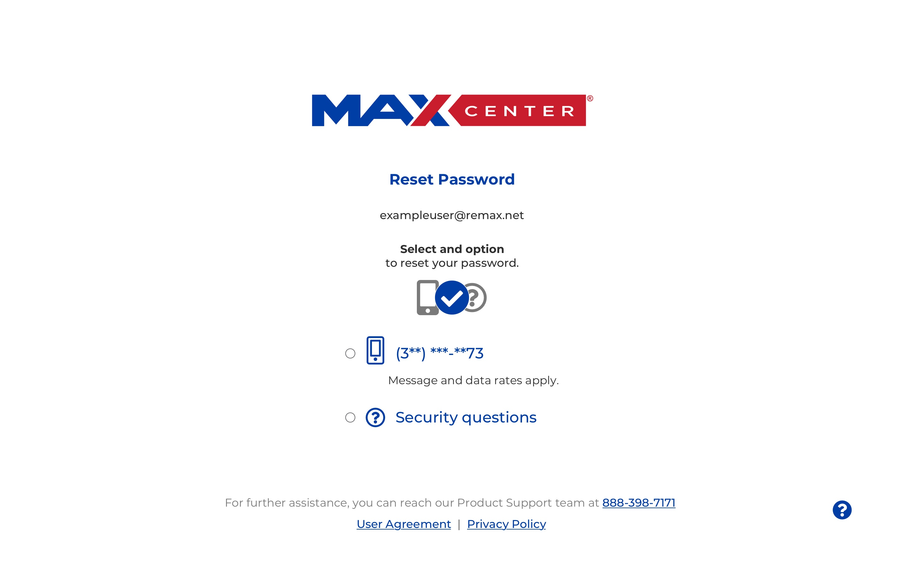
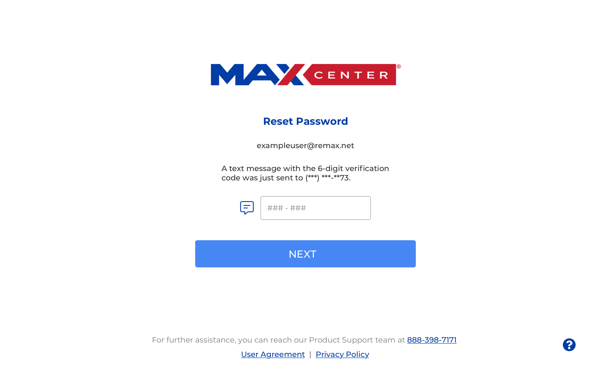
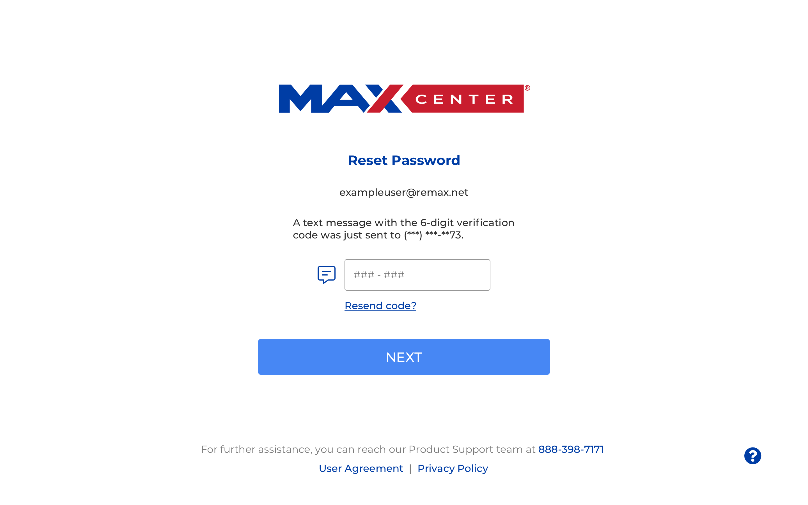

MAX/Center Password Recovery Re-design
Project Overview
MAX/Center is RE/MAX's online portal to technology and support services for its franchisees. RE/MAX's users, real estate brokers and agents across the US, have been struggling with recovering their passwords using the security questions they set up during onboarding. RE/MAX's security team and customer support department researched this issue and requested the UX team's help to design a new workflow that adds an SMS password recovery option to MAX/Center. Their assumption is this recovery method will help reduce the number of login-related support requests.
Client: RE/MAX LLC
- Real estate franchisor
- Generates income from franchise fees
- Provides MAX/Center web application to franchisees
Business Problem and Target User
The RE/MAX support team has noticed an increase in help requests for recovering passwords. The current password reset method involves security questions that brokers and agents often forget the answers to and that our support team can’t share according to security policy. The security team has explored the feasibility of other recovery methods that suit our authentication software and proposed using a method that involves sending users an SMS message. The goal of this design was to create a SMS recovery enrollment workflow and an SMS password recovery workflow that fits our current processes and uses a new update to the visual design of the login page.
Team and Role
Role: UX/UI designer
Stakeholders:
Product Manager
Product Owner
Constraints and Scope
- The Okta enrollment process for SMS recovery is limited in visual customization.
- Users must begin the recovery process from a link sent to their e-mail.
- The UX team works in periods of two week Agile Scrum sprints.
Design Inspiration
Before designing on a solution, I decided to look at how other major companies with larger user bases have approached guiding people through password recovery. The user base of companies like Google and Yahoo will be much larger than RE/MAX's user base, so there's a greater possibility that they have observed the various usability issues users encounter when recovering their passwords and solved for it while balancing security needs. I examined the process for four companies: Google, Yahoo, JPMorgan Chase, and Transamerica.
You may be asking, "Where's the research?"A different project team in the security department gathered customer support data and conducted the background research to understand the pain points RE/MAX brokers and real estate agents encountered in the password recovery processs. They decided on a goal of increasing the number of visits to MAX/Center from 34 per password-related support ticket to 68 visits per support ticket. This change would indicate that more users are visiting MAX/Center without experiencing login difficulties.
Google password recovery
Chase password recovery
Yahoo password recovery
Transamerica password recovery
Design Approach
Looking at the four approaches, there were different elements that seemed like they would be helpful to RE/MAX brokers and agents.
- Google, Yahoo, and Transamerica formatted the verfication code form field to make it easier to understand what to enter.
- Yahoo and JPMorgan Chase listed all the recovery methods available to the user which made it easy to choose the most convenient one.
- Most of the websites partially masked the contact method for receiving the verification code so users could still have an indication of which e-mail of phone number to check while maintaining security.
For this design, the visual patterns had already been determined from my teammate's prior work on the login for MAX/Center, so I used that basis to create a high fidelity mock-up for this workflow.
First Iteration: Selected Screens
Recovery Option Selection
Verification Code Entered
Feedback Loop
For the UX process at RE/MAX, the UX team requests feedback from the product managers and other product professionals who own the design request. The team then iterates on the design based on this feedback and additional feedback shared by the development team at a design demo meeting at the end of the two-week sprint. These are some of the suggestions these teams had.
- RE/MAX's brand blue (#003da5) looks similar to the common default blue used for links in browsers (#0000EE). Using a different color for the informational text on the page would make them look less like link text.
- The product team didn't have a set expiration time for the verification code, but they wanted a option to re-send it included in the design.
- The recovery options wouldn't include e-mail because an e-mail would be sent to the user first to verify their identity, so this option needed to change to the security questions.
- It wasn't obvious that the recovery options were buttons because their containers looked more like form fields. Radio buttons may be a better option.
Second Iteration: Selected Screens
Recovery Option Selection
Enter Verification Code
Verification Code Entered

Resend Verification Code
Next Steps
Until recently, UX research has been a small part of the UX team's regular work. After suggesting some improvements to our process and advocating for talking to our users, we've started to incorporate more research and validation into the UX team's backlog. The next step slated for this design is to conduct a quantitative unmoderated usability test on it to see how well brokers and agents navigate the process. I've strongly recommended this step to our product team because password recovery currently affects a significant number of users.